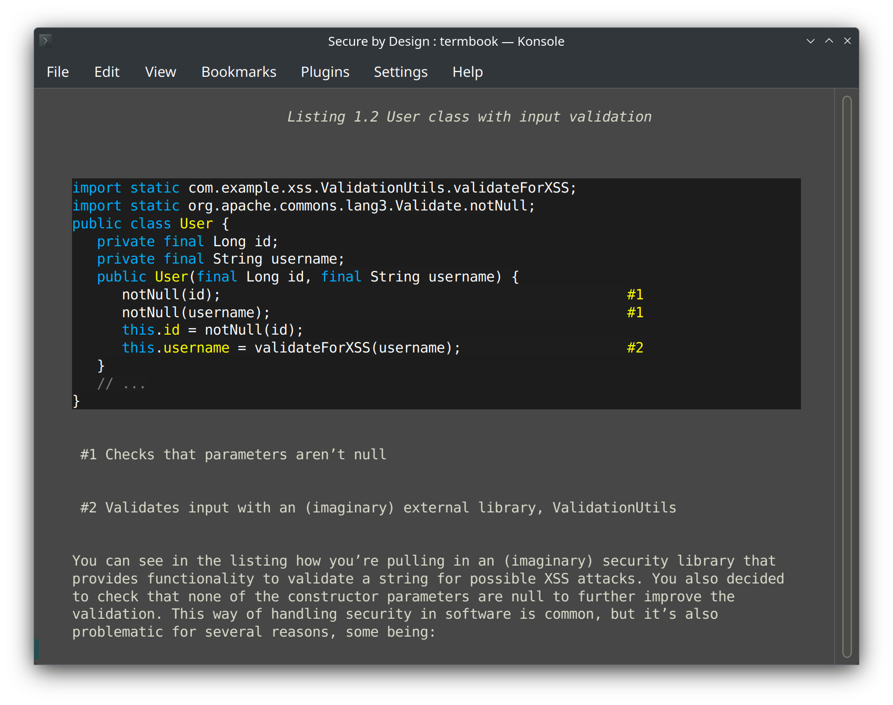

About
termbook is a terminal-based EPUB reader that renders styled text, syntax-highlighted code blocks, and rough image previews in your terminal. Navigate by scrolling, page turns, or chapter jumps. Search across the entire book, bookmark passages, and switch color schemes.
Built as a curses UI with integrated pygments syntax highlighting, lightweight in-terminal image previews, and external image opening where available.
Features
- EPUB parsing: Full ZIP-based EPUB extraction, OPF/NCX metadata, and chapter content handling.
- Text rendering: Formatted text spans (bold, italic, underline), HTML to terminal conversion, justified layout.
- Syntax highlighting: Pygments-powered code block rendering with 20+ language support.
- Image display: Lightweight in-terminal previews, with external opening for higher-fidelity viewing where supported.
- Navigation: Scroll, page, chapter navigation; full-book search; chapter table of contents.
- Bookmarks: Save and jump to bookmarked lines within the book.
- Color control: Switch between dark and light color schemes on supported terminals.
- Input handling: Responsive keyboard control with count prefixes for jumps (e.g.,
5kto scroll up 5 lines).
Installation
termbook is available as a Flatpak with one-click URL install and a hosted package repository, or can be built from source.
Usage
Launch termbook with an EPUB file:
termbook book.epubNavigation: Up/Down arrow to scroll, Page Up/Page Down to jump pages, n/p for next/previous chapter, Home/End to jump to start/end of chapter, t for table of contents, ? for help.
Search: Press / to search within the book. Bookmarks: s to save, b to choose bookmark. URLs: u to open, i for images. Colors: c to toggle color scheme (if supported).
Source & Attribution
termbook is open source and actively developed on GitHub. Released under the MIT License.
termbook builds upon epr by Benawi Adha, adapted and extended with modern parsing, rendering, and UI improvements.